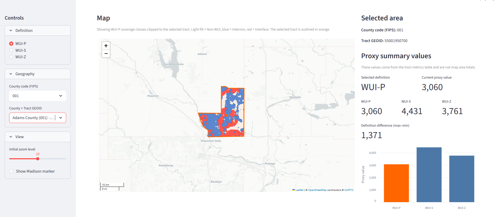

GEOG 778 Practicum in GIS Development

This project develops an interactive dashboard for comparing three Wildland–Urban Interface mapping approaches: WUI-P, WUI-S, and WUI-Z. The goal is to help users understand where different WUI definitions agree or disagree and why those differences matter for wildfire planning, mitigation, and spatial decision support in Wisconsin.
The intended audience includes wildfire mitigation staff, planners, GIS analysts, and decision makers who need to evaluate WUI conditions across Wisconsin counties. The dashboard supports scenario-based exploration by allowing users to compare WUI definitions at the county and tract level.
The project integrates land cover, address points, building footprint data, census geography, and WUI reference data. WUI-P uses address-point based information, WUI-S uses building footprint based surface mapping, and WUI-Z uses a census-based zonal classification. These methods are compared to show how different assumptions affect WUI mapping results.
Through this project, I learned how to manage a full GIS development workflow from problem definition and data preparation to dashboard design and final communication. One important lesson was that a practical GIS tool needs to balance technical complexity with clear visual communication. I also learned how to adjust project scope, test the workflow on smaller areas, and gradually improve the interface based on feedback.